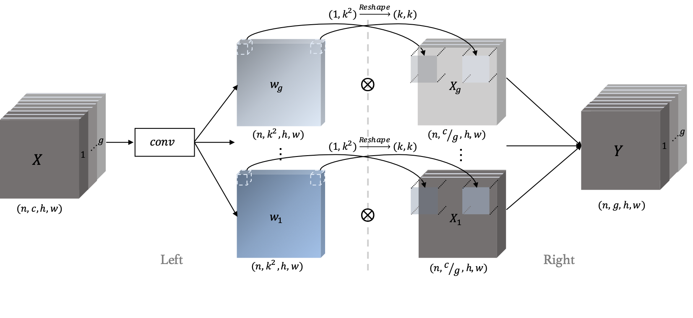
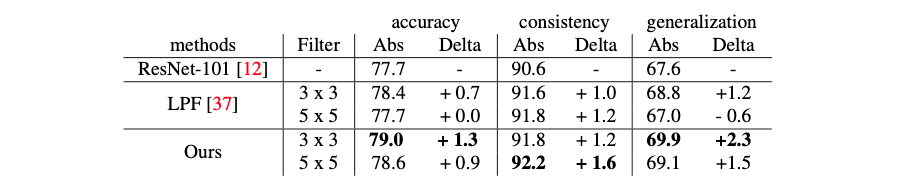
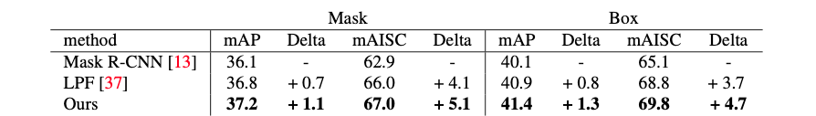
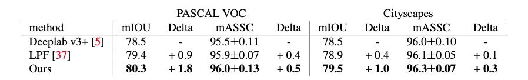

|
Abstract
Aliasing refers to the phenomenon that high frequency signals degenerate into completely different ones after sampling.
It arises as a problem in the context of deep learning as downsampling layers are widely adopted in deep architectures to reduce parameters and computation.
The standard solution is to apply a low-pass filter (e.g., Gaussian blur) before downsampling.
However, it can be suboptimal to apply the same filter across the entire content, as the frequency of feature maps can vary across both spatial locations and feature channels.
To tackle this, we propose an adaptive content-aware low-pass filtering layer, which predicts separate filter weights for each spatial location and channel group of the input feature maps.
We investigate the effectiveness and generalization of the proposed method across multiple tasks including ImageNet classification, COCO instance segmentation, and Cityscapes semantic segmentation.
Qualitative and quantitative results demonstrate that our approach effectively adapts to the different feature frequencies to avoid aliasing while preserving useful information for recognition.
|
|
Method

(Left) For each spatial location and feature channel group in the input X, we predict a k * k filter w.
(Right) We apply the learned filters on X to obtain content aware anti-aliased features.
|
|
Experiments
Image Classification and Domain Generalization

Image classification (accuracy and consistency) and domain generalization (generalization) results on ImageNet and ImageNet -> ImageNetVID.
We compare to strong ResNet-101 and LPF (low-pass filter, zhang.) baselines. Our method shows consistent improvement in accuracy, consistency, and generalization.
Instance Segmentation

Instance segmentation results on MS COCO. We compare to Mask R-CNN (Kaiming et al.) and LPF (low-pass filter, Zhang.).
Our approach consistently improves over the baselines for both mask and box accuracy and consistency.
Semantic Segmentation

Semantic segmentation results on PASCAL VOC2012 and Cityscapes.
We compare to Deeplab v3+ and LPF (low-pass filter, Zhang.).
Our approach leads to improved accuracy and consistency.
|
|
Citation
@inproceedings{zou2020delving,
title={Delving Deeper into Anti-aliasing in ConvNets},
author={Xueyan Zou and Fanyi Xiao and Zhiding Yu and Yong Jae Lee},
booktitle={BMVC},
year={2020}
}
|
|